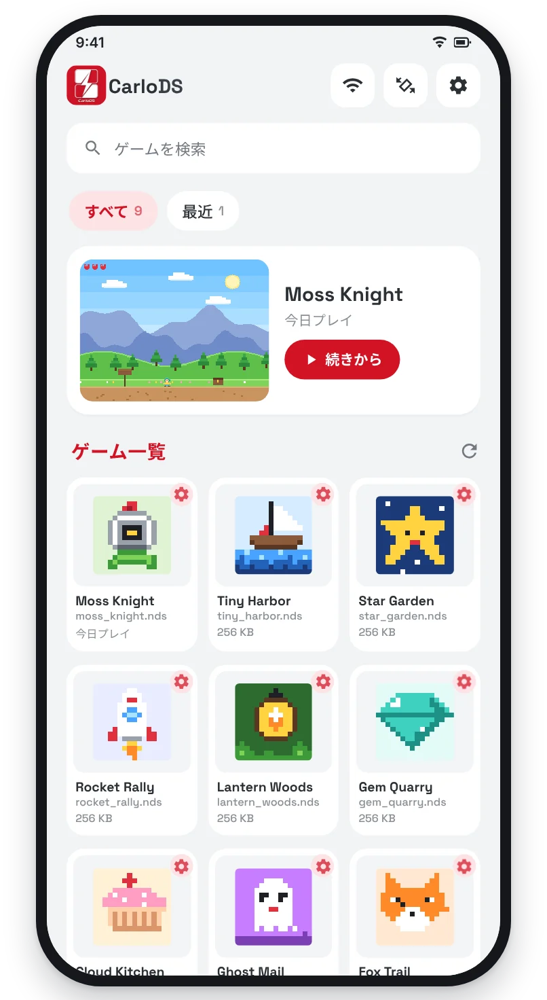
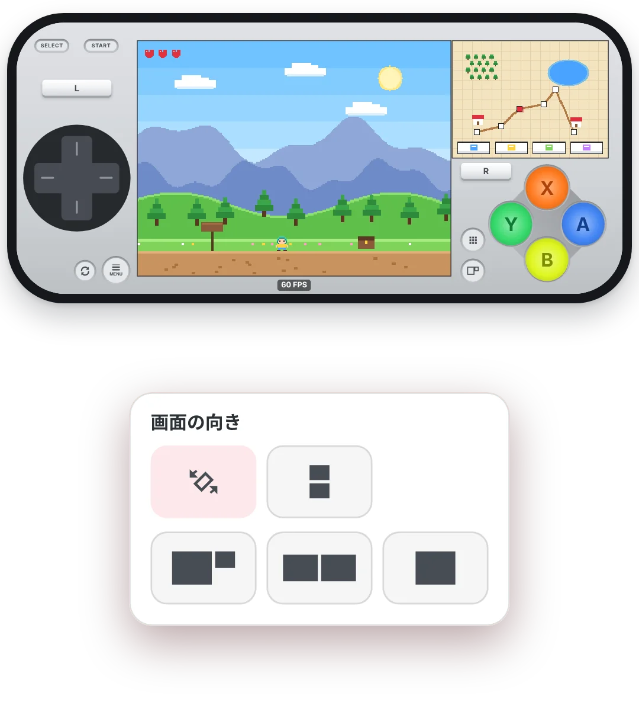
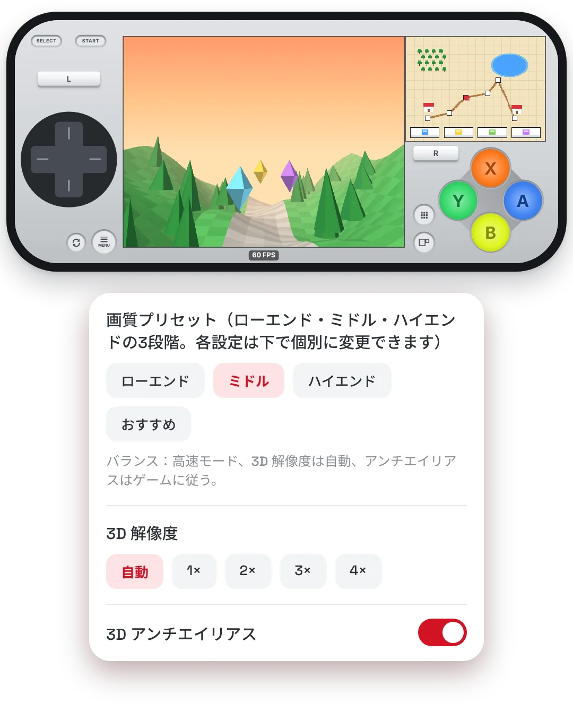
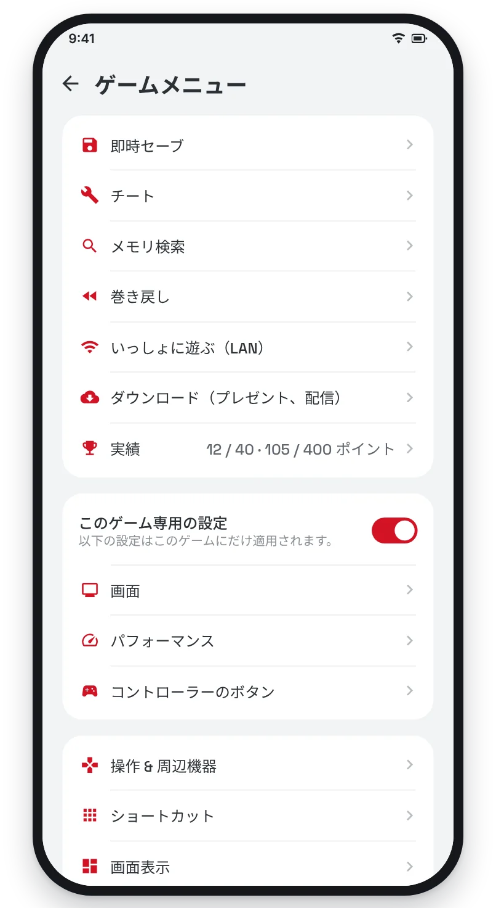
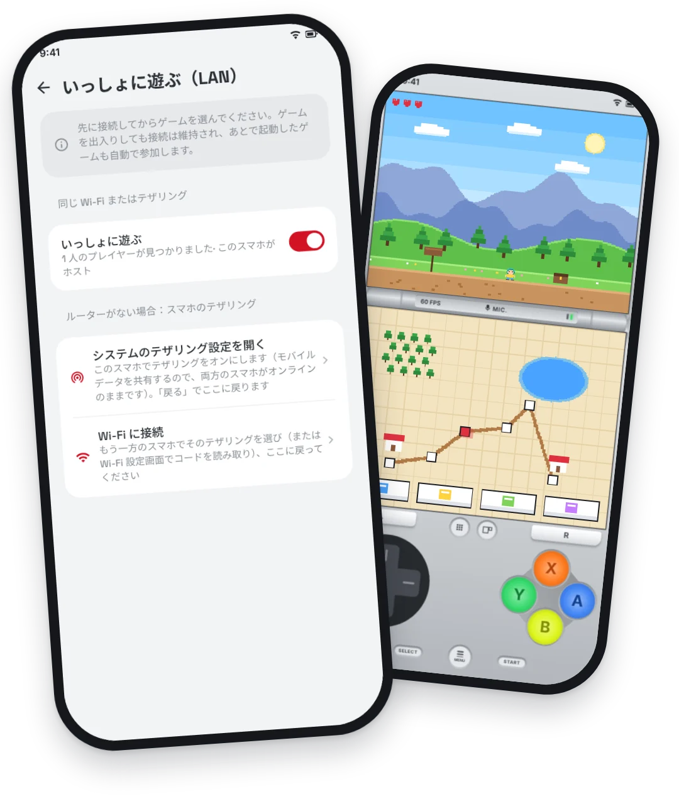
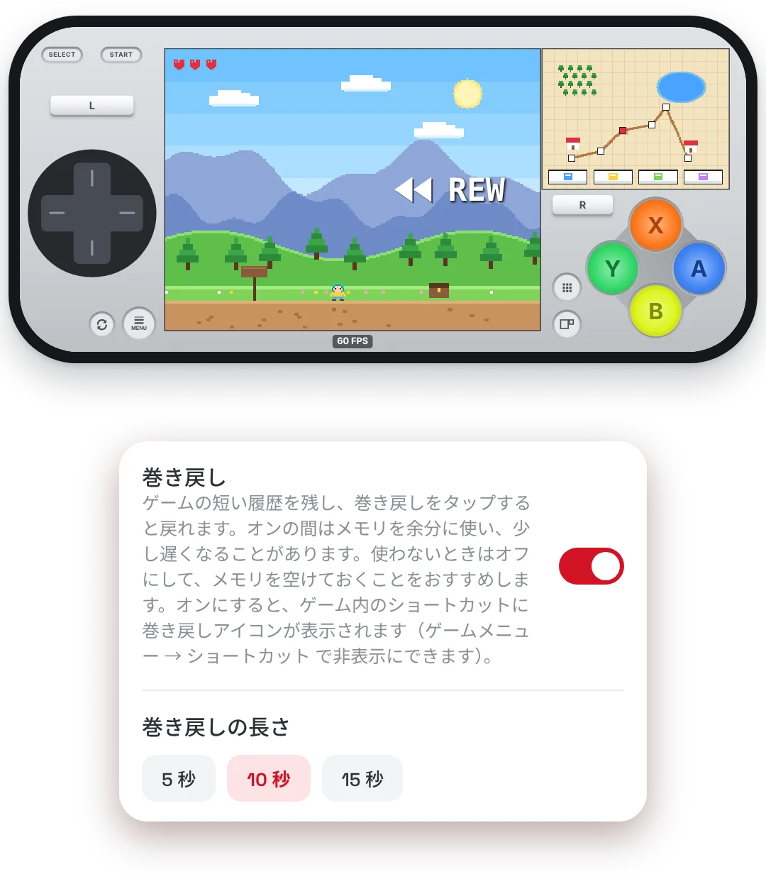

独自開発の高精度コアを搭載した NDS エミュレーター。高画質 3D・ローカル通信・チートに対応。

アイコンとタイトルを自動で読み込み、続きからすぐ遊べる

CarloDS は、Android スマートフォンおよびタブレット向けの NDS エミュレーターです。ARM9・ARM7 プロセッサー、2D／3D グラフィックス、サウンド、無線通信、内蔵 BIOS を含むエミュレーションコアをすべて独自に開発し、実機での多数のテスト結果をもとにタイミングと描画を一つずつ調整することで、実機に忠実な動作を目指しています。ほとんどのゲームは BIOS ファイルなしで動作し、ZIP 形式にも対応しています。
縦、大小2画面、横並び、1画面をワンタップで

ローエンド・ミドル・ハイエンドをワンタップで。3D は最大4倍

ステートセーブ、チート、巻き戻し、通信、配信、実績

ルーターがなくてもスマホのテザリングでOK

ゲームを動かしたまま、フローティング画面で値を検索

タップで 5・10・15 秒前へ。そこから続けて遊べます
